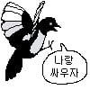
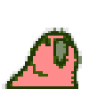

무빙보소 ㅋㅋ
무빙보소 ㅋㅋ
ㄴㄴ저새끼들 알 낳으면 둥지 주변에 돌아다니는거 존나 공격함
인종차별 하는 새로 유명함
ㅋㅋㅋㅋㅋㅋㅋㅋ
깡패로 소문난 조류중에 하나임
저거 새끼 키울때 둥지 주변 지나가면 무조건 공격함
더킹스웨이 ㅋㅋ
코카투의 공격이 아니었다니
할수 있으면 해봐라 조류놈아!
공격 성공이래봤자 헬멧에 처박고 고꾸라질듯 ㅋㅋㅋ
나름 지능 높아서 사람 얼굴 기억해서 보복도 하고 부리로 귀 쪼거나 발톱에 얼굴 긁혀서 좀 위험함

까치가 싸가지 없지만 저렇게 집요한건 뭔가 이상함
까치를 미리 섭외하고 연출한게 분명할 것
풀영상 보면 맥파이 조심하라고 하는 호주햄 나옴
영상 주인도 출근길이라 익숙해졌다고 함
댓글도 까치 날개 food duck 거리는 소리가 커서 안 보여도 감지는 될거라 함
매년 맥파이 산란기가 되면 둥지주변 지나가는건 다 습격함
버드샷마렵네

이새끼들 짜고 주작치는거네
뒤에 뭔가 보이나? ㄷㄷㄷ
호주 맥파이(Australian Magpie). 호주 전역에 서식하는 토착종 까치. 이름엔 까치가 들어가지만 우리가 아는 까치와는 거리가 먼 종이다. 검은색과 흰색의 깃털, 황금색 눈, 쐐기 모양의 푸른빛 부리를 가지고 있으며, 지능이 높아 사람을 알아보거나 몸에 붙은 추적 장치를 스스로 떼어낼 정도로 영리하다. 사람을 그다지 무서워하지 않고 도시 지역에 거주하며 2마리~12마리 정도가 무리를 지어서 서식한다. 호주 토착종이라 호주 정부의 보호를 받고 있어 사냥이 불법이다.
한국까치보다 몸이 크고 번식기에 공격적이다. 특히 봄(7~12월) 산란기에 매우 공격적으로 변하며 특히 9월~10월은 새끼를 보호하려는 수컷의 공격성이 가장 절정에 달한다. 호주 전역에서 맥파이 사고는 매년 2000~3000건이 보고되고 있고, 이중 200명 가량이 부상으로 병원을 찾는 것으로 알려졌다. 로열 빅토리안 전문병원에 따르면 까치 부리에 눈을 쪼여 병원을 찾는 경우는 60건 내외이고, 실명자도 발생한다고 한다. 호주 브리즈번 들린데만 공원에서는 엄마 품에 안겨 산책중이던 생후 5개월 여자아이가 맥파이의 공격을 받아 사망하는 사건도 발생했다.
수컷 까치는 새끼 새가 있는 둥지 주변의 50m 근방을 돌아다니면서 덩치 큰 대상을 찾아 공격하는데 특히 자전거나 오토바이를 타는 사람들이 표적이 잘 된다고 한다. 맥파이의 공격을 피하기 위해 빨리 달리는 순간 더 위험한 존재로 강주, 보다 빠른 속도로 날아와 더 맹렬히 공격하기 때문이다. 그래서 이 시기에 자전거나 오토바이를 타는 사람들은 모자나 헬멧이 필수 사항이다. 특히 사이클 헬멧에 여러 개의 홈이 난 플라스틱 줄을 길게 고정해 놓는 것이 효과가 좋다고 한다.
지능이 높다 보니 개체에 따라 공격의 강도가 달라진다고 한다. 상대방을 식별해 특정인과 특정 개에게 더 공격적인 행동을 보이는 경우도 있는데, 자신을 공격하려 했던 사람은 옷을 바꿔 입거나 시간이 지나도 알아본다고 한다. 반면 자신에게 해가 되지 않거나 산란기 이전부터 먹이를 주며 친하게 지낸 사람은 알아보고 친근하게 대한다고 한다.
호주는 맥파이의 공격이 빈번해지는 시기를 급습시즌(Swooping Season)이라고 하여 지방정부별로 습격 데이터가 공유되고 민간인이 만든 경고 사이트도 있다. 맥파이 공격을 피하기 위해서는 가장 좋은 것이 까치 둥지를 피해 다니는 것이며 공격받으면 가급적 자리를 피할 것, 자전거나 스케이트 보드를 탈 때는 반드시 헬멧과 선글라스를 착용할 것과 도보일 경우 챙이 넓은 모자를 쓰거나 우산을 펴서 방어할 것을 추천한다.
호 조까치
호주 맥파이는 까치보단 까마귀랑 가까운종임
클레드 퀸 q 잘피하네
헬멧 뒷통수에 먹이 달아놓은거같은데